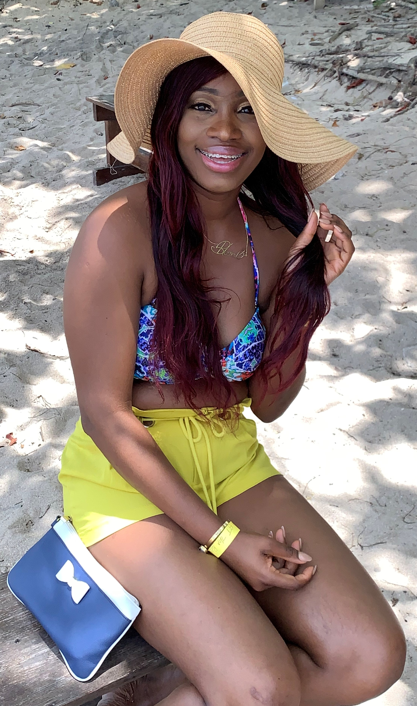

About
I am a born and raised Jamaican who grew up in the loving home of Colin Isaacs and Marguerite Gardnear. I was always a happy child getting involved in any fun girly activities. I enjoyed going to school and loved going over my grandma’s house. Life was filled with lots of joy and adventure as I grew older.
My mom was the warrior of my life. She taught me strength and how to get up after someone knocked me down. When I was a little girl, we were not always close as we became later in my life. She always knew the wise thing to say and she never once told me to give up. I always looked up to her no matter what I did and tried to always show her respect.

My aunt was my SpongeBob and I was her Squidward. She always hated when I watched SpongeBob growing up because she thought it was stupid. I remember the days when she would grab the remote from me and changed the channel to watch BET. Then surprisingly one day she sat down to watch TV with me. I always followed her around and was that annoying little brat I never admitted to be. She was always the cool one and I did everything, well.... almost everything she told me to do.
My uncle was MIA at first, but then once he and my mom were starting having a better relationship, I got the chance to know him. He was really hard to agree with at first and just came off to be very aggressive. Now, he’s a little softie and I love that I can talk to him. He always amazed me at how knowledgeable he was, even though he admits he talked shit most of the times. He’s always the clown of the party and wants everyone to have a good time when they hang out with him.